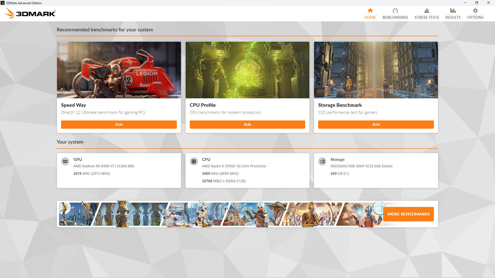
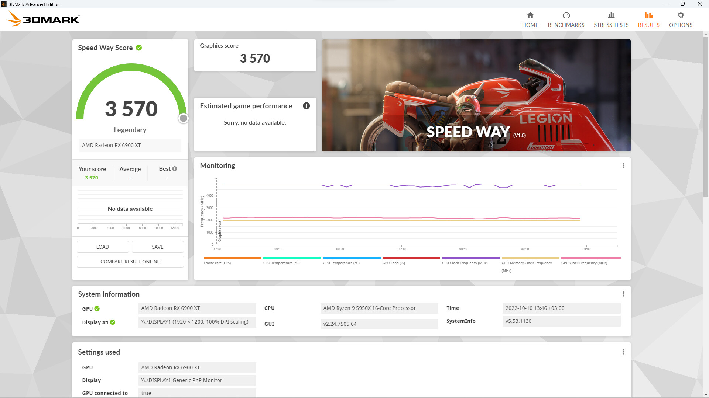

3DMark 为什么能当显卡跑分的"宪法"——从固定场景到合成负载的设计哲学
同一台机器跑不同游戏帧率差几倍，为什么跑 3DMark 的结果就能跨代跨厂对比？拆解它消除变量的四层设计，以及合成测试与真实游戏之间的永恒张力。
你有没有过这种困惑：同一张显卡，A 游戏能跑 120 帧，B 游戏只有 40 帧，评测文章里的数字和你自己测的对不上。但 3dmark官网 的分数不一样——不管你在哪个论坛看，Time Spy 跑 12000 分的显卡，放任何一台机器上、换任何一个人来跑，结果波动都控制在百分之几以内。
这个"为什么"就是 3DMark 能当行业基准的核心秘密。它的设计从第一天起就在回答一个问题：怎么造一个完全可复现的测量尺子，让显卡性能这件事可以被精确比较。
消除变量：四层隔离墙的架构
我拆了它的设计，核心逻辑是四层隔离，把所有可能干扰测量的变量一层层挡在外面。
第一层：固定场景。3DMark 的测试场景不是用真实游戏关卡，而是用预渲染的合成场景——比如 Time Spy 那个冰雪覆盖的城堡。场景里每一棵树的位置、每一束光的角度、每一帧要渲染的多边形数量，在所有机器上、所有运行时里都是一模一样的。真实游戏做不到这一点：敌人 AI 会随机游走，关卡脚本有分支，甚至你走到地图的哪个角落都会改变负载。合成场景从根源上消除了"场景差异"这个最大的变量。
第二层：固定负载。从 3dmark下载 装完之后你就会发现，测试运行时不允许你改画质设置——分辨率、渲染分辨率、后处理开关，全锁死。它甚至会强制把驱动里的 G-SYNC、帧率上限、垂直同步全部关掉。3dmark文档 里那句"驱动只当搬运工，不当调度员"说的就是这个逻辑：任何全局强制的优化都可能在某个环节悄悄改变渲染节奏，让负载不再是那个固定的负载。
第三层：外部干扰隔离。3DMark 要求全屏独占运行，窗口化会直接作废结果。这不是什么产品特性，而是在防操作系统的调度干扰——后台的浏览器 Tab、网盘同步、甚至输入法，都可能在某个瞬间抢一下 CPU 时间片。全屏独占模式下，Windows 的调度器会给测试进程最高优先级，几乎把所有 CPU 核心都让给它。
第四层：结果归一化。最终出来的分数不是简单的平均帧率，而是经过一套公式加权计算出来的——帧率曲线的波动、最低帧、甚至温度和频率的稳定性都会影响最终分数。一个连跑三次帧率都抖得厉害的显卡，哪怕平均帧率高，分数也会被拉低。这相当于把"稳定性"这个主观指标也量化进了结果里。

合成测试 vs 真实游戏：一场永恒的取舍
这套设计哲学有一个底层假设：固定负载的合成场景可以代表真实游戏的性能水平。但这个假设从 3DMark 诞生那天起就充满争议。
合成测试的优势很明确——精确、可复现、能测出单项能力。比如特性测试（Feature Test）里的 DirectX Raytracing 测试，它把光追这一件事单独拎出来压榨，完全不掺其他负载，能告诉你显卡在光追维度的真实上限。这在真实游戏里做不到——你玩《赛博朋克 2077》时，光追、DLSS、纹理加载、物理模拟全混在一起，你根本分不清帧率下降到底是哪个环节的瓶颈。
但合成测试的劣势同样致命——它不等于真实游戏体验。Time Spy 的冰雪城堡场景重负载在几何管线和光追上，完全没触及虚拟纹理、流式加载、NPC AI 这些真实游戏的常见瓶颈。一张 Time Spy 分数很高的显卡，跑到某些吃内存带宽的游戏里可能翻船。反过来也成立——某些真实游戏表现好的卡，在合成测试里分数平平。
更微妙的是跨测试分数的不可比性。3DMark 有 Time Spy、Fire Strike、Port Royal、Wild Life 等十几个基准测试，它们测的技术维度各不相同。官方文档明确说了：Time Spy 分数和 Fire Strike 分数之间没有任何换算关系。这不是技术限制，而是设计使然——每一个基准测试都是为特定硬件世代和技术栈设计的，硬把它们拉到一张尺子上，只会产生误导。

从"为什么快"到"值不值"：特性测试的隐藏洞察
这几年 3DMark 新增的特性测试（Feature Test）体系，其实藏着它最精妙的设计思路——不只测综合能力，还测单项取舍。
以三家超分技术的对比为例。NVIDIA DLSS、AMD FSR、Intel XeSS，每一家都有自己独立的官方特性测试。这三个测试的运行逻辑完全一致：同一场景跑两遍，一遍原生分辨率当基线，一遍开启超分。最终结果同时给出帧率增益和帧检视器里的画质对比——你在自己这张卡上，能同时看到"开超分快了多少帧"和"画质掉了多少"。
这个设计的妙处在于，它不替你做判断，而是把判断所需的全部数据摆在你面前。RTX 显卡用户可能发现 DLSS 帧率增益大、画质损失小，直接成了默认选项；非 RTX 用户可能发现 FSR 在老卡上也能跑出不错的帧率，而且画质退化在可接受范围。甚至同一张卡、同一套技术，在 1080p 和 4K 下的收益曲线完全不同——原生负载越轻的分辨率档，超分的收益反而越小。
这才是 3DMark 真正有价值的地方：它不只是一把尺子，更是一个诊断工具。PCI Express 带宽测试能立刻暴露显卡插错槽或链路降速的问题。光追特性测试能精准告诉你新驱动宣称的"光追优化"到底值多少帧。这些东西没有一个游戏能替你测出来。
我的判断：它适合什么，不适合什么
总结一下，这套设计意味着 3DMark 在以下场景几乎是刚需：
- 装机验卡：新买的显卡跑分先跑一遍 Time Spy，分数远低于同配置平均线就是硬件有问题。PCIe 带宽测试还能顺手查插槽有没有跑满。
- 技术尝鲜：新驱动宣传优化了光追？跑一遍 DXR 特性测试的前后对比最直观，别听厂商吹。
- 横向对比：想在两张显卡里二选一？同一个基准测试下的分数是最公平的参照——别拿 A 游戏的帧率和 B 游戏的帧率比。
- 驱动验证：每次更新显卡驱动后跑一次，分数波动超过 5% 就要警惕驱动有没有引入回归。
但在以下场景，3DMark 反而会把你带歪：
- 预测某款游戏的帧率：别想了，合成场景不代表任何真实游戏的负载结构。
- 跨测试换算：Time Spy 12000 分到底相当于 Fire Strike 多少？这个问题本身就不该存在。
- 追求极限分数：超频玩家的那套操作（关超线程、降分辨率、跑三次取最高）是在和测试本身博弈，不是在测显卡能力。
最后值得说一句：3DMark 安卓版和 PC 版其实是同一套设计哲学的延伸——固定场景、固定负载、消除变量。只是测试载体从桌面 GPU 换成了移动端 SoC，评分体系也做了相应调整。但那套"让性能这件事可以被精确比较"的底层逻辑，从头到尾没有变过。
这套资料我同步放到了 GitHub、Gitee、GitCode 三个仓库里，国内网络下 Gitee 和 GitCode 的访问通常更顺畅些，GitHub 那边更新最及时，挑你方便的就行。